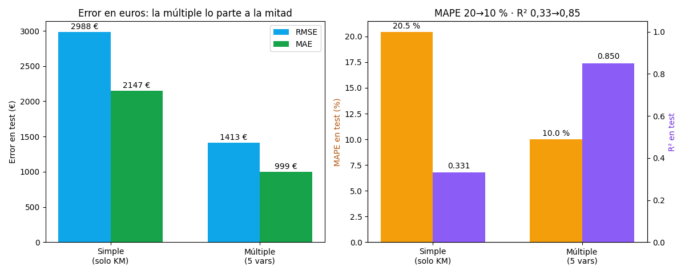

Bloque D · Regresión lineal, selección y regularización · Lección 0043 · mar 15 sep
Métricas y split 80/20: el flujo de la pizarra, con números
Win de hoy: entrenar en el 80 %, medir en el 20 % escondido: la simple erra 2.988 € (MAPE 20,5 %) y la múltiple 1.413 € (MAPE 10,0 %) — y cada métrica (RMSE, MAE, MAPE) cuenta algo distinto.
1 · El flujo: EDA → dropout → split → fit → test
El flujo recomendado de clase, paso a paso: EDA (mirar, lección 0006) → dropout consciente de columnas (0019) → split 80 % train / 20 % test → fit en train → medir solo en test. La regla de oro: el test no se mira hasta el final; si elegís el modelo mirando el test, el test deja de ser honesto (para elegir, usá CV como en 0003).
Nota de mapa: MSE, RSS y MAE como función de costo (con fórmulas y derivación) se desarrollan en la 0048 §4; acá se usan como métricas de test, sin repetir teoría.
2 · Tres métricas, tres personalidades
- RMSE (0003): raíz del error cuadrático medio. Castiga extra los errores grandes (un fallo de 4.000 € pesa ×4, no ×2). En euros.
- MAE: error absoluto promedio. Democrático: cada euro de error pesa lo mismo. En euros. Siempre ≤ RMSE.
- MAPE: lo mismo que MAE pero en % del precio real. «Le erro por 10 %» lo entiende cualquiera; pero explota si hay precios ≈ 0.

Lectura: (1) RMSE > MAE siempre (2.988 vs 2.147): la brecha delata errores grandes esporádicos. (2) MAPE traduce a negocio: «10 % de error típico» vs «20 %». (3) Test R² (0,331 / 0,850) ≈ train R² (0,323 / 0,864): sin overfitting; medir en train habría mentido apenas, pero medir en test lo prueba.
Regenerar la figura (mismo resultado versionado en assets/img/toyota/):
python scripts/make_figures.py --only metricas-split-80-203 · ¿Cuándo mirar cada una?
| Métrica | Mirala cuando… | Cuidado con… |
|---|---|---|
| RMSE | Un error gigante duele más que varios chicos (stock, garantías) | Una sola bestia (KM=1) lo dispara |
| MAE | Querés «el error típico» honesto en euros | Subestima el riesgo de cola |
| MAPE | Hablás con negocio («10 %» cierra acuerdos) | Precios ≈ 0; asimétrico (castiga más subestimar) |
| R² | Comparás explicabilidad entre datasets distintos | Es relativo: 0,33 puede ser buen negocio igual |
4 · El flujo en 12 líneas (reproducí la Fig. 1)
import pandas as pd, numpy as np
from sklearn.model_selection import train_test_split
from sklearn.linear_model import LinearRegression
from sklearn.metrics import mean_squared_error, mean_absolute_error
df = pd.read_csv("../ToyotaCorolla.csv")
cols = ["Age_08_04","KM","HP","cc","Weight"]
d = df.dropna(subset=cols + ["Price"])
Xtr, Xte, ytr, yte = train_test_split(d[cols], d["Price"], test_size=0.2, random_state=42)
m = LinearRegression().fit(Xtr, ytr) # fit SOLO en train
yp = m.predict(Xte) # medir SOLO en test
print("RMSE %.1f" % (mean_squared_error(yte, yp) ** 0.5)) # 1412.8
print("MAE %.1f" % mean_absolute_error(yte, yp)) # 998.5
print("MAPE %.2f%%" % (np.mean(np.abs(yte - yp) / yte) * 100)) # 10.02%Tu turno: repetí con d[["KM"]] y verificá 2.988 / 2.147 / 20,46 %.
Luego medí las mismas métricas en Xtr: si train ≪ test, hay overfitting.
5 · Quiz (auto-chequeo inmediato)
6 · Fuente primaria y cierre
Para profundizar (1 fuente): James et al., An Introduction to Statistical Learning — cap. 3.2–3.3 y 5.1 (métricas, train/test). Más contexto en RESOURCES.
Orden Bloque D: siguiente en el bloque, 0047 · Remuestreo: validación cruzada y bootstrap: k tests honestos que rotan + incertidumbre de β₁ con 1000 réplicas.